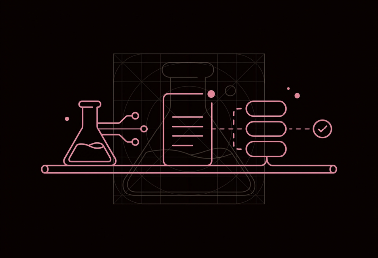

Ria Ayu Pramudita
D.Eng in Chemical Engineering. Five years focused on raising my kids. Now applying what I've learned since — n8n, AI content generation — back into the field I trained in. This site tracks that build, in the open.

Currently
Log updated Aug 2026n8n workflow automation, AI audiovisual generation, AI-assisted coding (vibe-coding).
ChemEPortal, a website to introduce chemical engineering as a discipline.
Small pilot projects and honest feedback from process, lab, and manufacturing teams.
Where domain expertise meets automation
Knowledge infrastructure & retrieval
RAG pipelines, n8n workflows, and research agents feed a second brain; knowledge accumulated, not just archived.
Technical content generation
AI image, video, and music production for training material and process explainers; planned and post-processed, not just prompted.
Domain translation
A D.Eng in chemical engineering means I can read the process behind the request, not just the prompt.
Background
Ten years across research, industry, and academia before this shift toward AI-driven practice.
Full background & CV →- Postdoctoral ResearcherTokyo Institute of Technology2020–2021
- Senior Staff, Energy DivisionPT Mitsui Indonesia2015–2017
- D.Eng, Chemical EngineeringTokyo Institute of Technology2017–2020
- M.Eng, Chemical EngineeringHongik University2013–2015
Shipped, not theoretical
APTEKIM.id
Official site for Indonesia's Chemical Engineering Higher Education Association, built bilingual (English / Bahasa Indonesia).
View projectChemE Kids
A games site for children exploring math and science, plus a curated set of free learning resources.
View projectFollowing along, or have a process worth automating?
I'm posting builds as I make them — no polished case studies yet, just the actual work. If something here is relevant to your team, I'd like to hear about it.